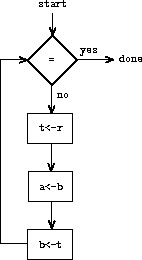
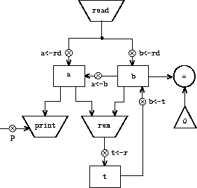

|
Para projetar uma máquina de registrador, precisamos projetar seus caminhos de dados (registradores e operações) e o controlador que sequencia essas operações. Para ilustrar o projeto de uma máquina de registradores simples, examinaremos o Algoritmo de Euclides, que é usado para calcular o maior divisor comum (MDC) de dois números inteiros. Como vimos na seção 1.2.5, O algoritmo de Euclides pode ser realizado por um processo iterativo, conforme especificado pelo seguinte procedimento:
(define (gcd a b)
(if (= b 0)
a
(gcd b (remainder a b))))
Uma máquina para executar esse algoritmo deve acompanhar dois números, a e b, então suponhamos que esses números sejam armazenados em dois registradores com esses nomes. As operações básicas necessárias estão testando se o conteúdo do registrador b é zero e calcula o restante do conteúdo do registrador a dividido pelo conteúdo do registrador b. A operação restante é um processo complexo, mas suponha que, por enquanto, tenhamos um dispositivo primitivo que calcula os restantes. Em cada ciclo do algoritmo MDC, o conteúdo do registrador a deve ser substituído pelo conteúdo do registrador b e o conteúdo de b deve ser substituído pelo restante do conteúdo antigo do a dividido pelo conteúdo antigo de b. Seria conveniente se essas substituições pudessem ser feitas simultaneamente, mas em nosso modelo de máquinas de registrador, assumiremos que apenas um registrador pode receber um novo valor a cada etapa. Para realizar as substituições, nossa máquina usará um terceiro registrador "temporário", que chamamos de t. (Primeiro, o restante será colocado em t, então o conteúdo de b será colocado em a e, finalmente, o restante armazenado em t será colocado em b).
Podemos ilustrar os registradores e operações necessários para esta máquina usando o diagrama de caminho de dados mostrado na figura 5.1. Neste diagrama, os registradores (a, b e t) são representados por retângulos. Cada maneira de atribuir um valor a um registrador é indicada por uma seta com um X atrás da cabeça, apontando da fonte de dados para o registrador. Podemos pensar no X como um botão que, quando pressionado, permite que o valor na fonte “flua” para o registrador designado. O rótulo ao lado de cada botão é o nome que usaremos para nos referir ao botão. Os nomes são arbitrários e podem ser escolhidos para ter valor mnemônico (por exemplo, a<-b indica pressionar o botão que atribui o conteúdo do registrador b ao registrador a) A fonte de dados para um registrador pode ser outro registrador (como no a<-b atribuição), um resultado da operação (como no t<-r atribuição) ou uma constante (um valor interno que não pode ser alterado, representado em um diagrama de caminho de dados por um triângulo que contém a constante).
Uma operação que calcula um valor a partir de constantes e o conteúdo dos registradores é representada em um diagrama de caminho de dados por um trapézio contendo um nome para a operação. Por exemplo, a caixa marcada rem na figura 5.1 representa uma operação que calcula o restante do conteúdo dos registradores a e b ao qual está anexado. As setas (sem botões) apontam dos registradores e constantes de entrada para a caixa e as setas conectam o valor de saída da operação aos registradores. Um teste é representado por um círculo que contém um nome para o teste. Por exemplo, nossa máquina MDC possui uma operação que testa se o conteúdo do registrador b é zero. Um teste também possui setas de seus registradores e constantes de entrada, mas não possui setas de saída; seu valor é usado pelo controlador e não pelos caminhos de dados. No geral, o diagrama do caminho dos dados mostra os registradores e operações necessárias para a máquina e como eles devem ser conectados. Se visualizarmos as setas como fios e o X Como botões, o diagrama de caminho de dados é muito parecido com o diagrama de fiação de uma máquina que pode ser construída a partir de componentes elétricos.
|
Para que os caminhos de dados efetivamente calculem os MDCs, os botões devem ser pressionados na sequência correta. Descreveremos essa sequência em termos de um diagrama de controlador, conforme ilustrado na figura 5.2.. Os elementos do diagrama do controlador indicam como os componentes do caminho de dados devem ser operados. As caixas retangulares no diagrama do controlador identificam os botões do caminho de dados a serem pressionados e as setas descrevem o sequenciamento de uma etapa para a seguinte. O diamante no diagrama representa uma decisão. Uma das duas setas de sequência será seguida, dependendo do valor do teste de caminho de dados identificado no diamante. Podemos interpretar o controlador em termos de uma analogia física: pense no diagrama como um labirinto no qual uma bola de gude está rolando. Quando o mármore rola em uma caixa, ele aperta o botão do caminho de dados que é nomeado pela caixa. Quando o mármore rola para um nó de decisão (como o teste para b = 0), deixa o nó no caminho determinado pelo resultado do teste indicado. Tomados em conjunto, os caminhos de dados e o controlador descrevem completamente uma máquina para calcular MDCs. Iniciamos o controlador (o mármore rolante) no local marcado start, depois de colocar números nos registradores a e b. Quando o controlador atingir done, encontraremos o valor do MDC no registrador a.
|  |
Exercício 5.1. Projete uma máquina de registradores para calcular fatoriais usando o algoritmo iterativo especificado pelo procedimento a seguir. Desenhe diagramas de caminho de dados e controlador para esta máquina.
(define (factorial n)
(define (iter product counter)
(if (> counter n)
product
(iter (* counter product)
(+ counter 1))))
(iter 1 1))
Os diagramas de caminho de dados e controlador são adequados para representar máquinas simples, como o MDC, mas são difíceis de descrever para máquinas grandes, como um interpretador Lisp. Para tornar possível lidar com máquinas complexas, criaremos uma linguagem que apresentará, em forma de texto, todas as informações fornecidas pelos diagramas de caminho de dados e controlador. Começaremos com uma notação que espelha diretamente os diagramas.
Definimos os caminhos de dados de uma máquina descrevendo os registradores e as operações. Para descrever um registrador, damos-lhe um nome e especificamos os botões que controlam a atribuição a ele. Atribuímos um nome a cada um desses botões e especificamos a fonte dos dados que entram no registrador sob o controle do botão. (A fonte é um registrador, uma constante ou uma operação). Para descrever uma operação, fornecemos um nome e especificamos suas entradas (registradores ou constantes).
Definimos o controlador de uma máquina como uma sequência de instruções junto com etiquetas que identificam pontos de entrada na sequência. Uma instrução é uma das seguintes:
A máquina inicia no início da sequência de instruções do controlador e para quando a execução chega ao final da sequência. Exceto quando uma ramificação altera o fluxo de controle, as instruções são executadas na ordem em que estão listadas.
(data-paths
|
Figura 5.3 mostra a máquina MDC descrita desta maneira. Este exemplo apenas sugere a generalidade dessas descrições, uma vez que a máquina MDC é um caso muito simples: cada registrador possui apenas um botão e cada botão e teste é usado apenas uma vez no controlador.
Infelizmente, é difícil ler essa descrição. Para entender as instruções do controlador, devemos nos referir constantemente às definições dos nomes dos botões e dos nomes das operações, e para entender quais são os botões, podemos ter que nos referir às definições dos nomes das operações. Assim, transformaremos nossa notação para combinar as informações das descrições do caminho de dados e do controlador, para que possamos ver todas juntas.
Para obter essa forma de descrição, substituiremos o botão arbitrário e os nomes das operações pelas definições de seu comportamento. Ou seja, em vez de dizer (no controlador) "Botão de pressão t<-r”E dizendo separadamente (nos caminhos de dados)“ Botão t<-r atribui o valor do rem operação para o registrador t" e as rem as entradas da operação são o conteúdo dos registradores a e b, "Diremos (no controlador)" Pressione o botão que atribui para o registrador t o valor do rem operação sobre o conteúdo dos registradores a e b. ” Da mesma forma, em vez de dizer (no controlador) “Execute o = teste ”e dizendo separadamente (nos caminhos de dados)“ O = teste opera com o conteúdo do registrador b e a constante 0 ", diremos" Executar o = teste no conteúdo do registrador b e o constante 0. " Omitiremos a descrição do caminho de dados, deixando apenas a sequência do controlador. Assim, a máquina MDC é descrita da seguinte maneira:
(controller
test-b
(test (op =) (reg b) (const 0))
(branch (label gcd-done))
(assign t (op rem) (reg a) (reg b))
(assign a (reg b))
(assign b (reg t))
(goto (label test-b))
gcd-done)
Essa forma de descrição é mais fácil de ler do que o tipo ilustrado na figura 5.3, mas também possui desvantagens:
Apesar dessas desvantagens, usaremos essa linguagem de máquina de registradores ao longo deste capítulo, porque estaremos mais preocupados em entender os controladores do que em entender os elementos e as conexões nos caminhos de dados. Devemos ter em mente, no entanto, que o projeto do caminho de dados é crucial no projeto de máquinas reais.
Exercício 5.2. Use a linguagem da máquina de registradores para descrever a máquina fatorial iterativa do exercício 5.1.
Modificaremos a máquina MDC para que possamos digitar os números cujo MDC queremos e obter a resposta impressa em nosso terminal. Não discutiremos como fabricar uma máquina capaz de ler e imprimir, mas assumiremos (como fazemos quando usamos read e display no Scheme) que eles estão disponíveis como operações primitivas.1
Read é como as operações que estamos usando, pois produz um valor que pode ser armazenado em um registrador. Mas read não recebe entradas de nenhum registrador; seu valor depende de algo que acontece fora das partes da máquina que estamos projetando. Permitiremos que as operações de nossa máquina tenham esse comportamento e, portanto, atrairemos e notificaremos o uso de read assim como fazemos qualquer outra operação que calcule um valor.
Print, por outro lado, difere das operações que usamos de maneira fundamental: não produz um valor de saída para ser armazenado em um registrador. Embora tenha um efeito, esse efeito não está em uma parte da máquina que estamos projetando. Vamos nos referir a esse tipo de operação como uma ação. Representaremos uma ação em um diagrama de caminho de dados, assim como representamos uma operação que calcula um valor - como um trapézio que contém o nome da ação. As setas apontam para a caixa de ação a partir de quaisquer entradas (registradores ou constantes). Também associamos um botão à ação. Pressionar o botão faz a ação acontecer. Para fazer um controlador pressionar um botão de ação, usamos um novo tipo de instrução chamado perform. Assim, a ação de imprimir o conteúdo do registrador a é representado em uma sequência do controlador pela instrução
(perform (op print) (reg a))
Figura 5.4 mostra os caminhos de dados e o controlador para a nova máquina MDC. Em vez de deixar a máquina parar de imprimir a resposta, fizemos com que ela recomeçasse, para que ele lesse repetidamente um par de números, calculasse seu MDC e imprimisse o resultado. Essa estrutura é como os loops do driver que usamos nos interpretadores do capítulo 4.
|  (controller
|
Muitas vezes, definiremos uma máquina para incluir operações "primitivas" que são realmente muito complexas. Por exemplo, nas seções 5.4 e 5.5 trataremos as manipulações do ambiente do Scheme como primitivas. Essa abstração é valiosa porque nos permite ignorar os detalhes de partes de uma máquina para que possamos nos concentrar em outros aspectos do design. O fato de termos varrido muita complexidade para debaixo do tapete, no entanto, não significa que o projeto de uma máquina não seja realista. Sempre podemos substituir os complexos "primitivos" por operações primitivas mais simples.
Considere a máquina MDC. A máquina possui uma instrução que calcula o restante do conteúdo dos registradores a e b e atribui o resultado ao registrador t. Se queremos construir a máquina MDC sem usar uma operação primitiva de restante, devemos especificar como calcular os restantes em termos de operações mais simples, como subtração. De fato, podemos escrever um procedimento Scheme que encontre os restos desta maneira:
(define (remainder n d)
(if (< n d)
n
(remainder (- n d) d)))
Assim, podemos substituir a operação restante nos caminhos de dados da máquina MDC por uma operação de subtração e um teste de comparação. Figura 5.5 mostra os caminhos de dados e o controlador da máquina elaborada. A instrução
 |
(assign t (op rem) (reg a) (reg b))
na definição do controlador MDC é substituída por uma sequência de instruções que contém um loop, conforme mostrado na figura 5.6.
(controller
|
Exercício 5.3. Projete uma máquina para calcular raízes quadradas usando o método de Newton, conforme descrito na seção 1.1.7:
(define (sqrt x)
(define (good-enough? guess)
(< (abs (- (square guess) x)) 0.001))
(define (improve guess)
(average guess (/ x guess)))
(define (sqrt-iter guess)
(if (good-enough? guess)
guess
(sqrt-iter (improve guess))))
(sqrt-iter 1.0))
Comece assumindo que good-enough? e improve operações estão disponíveis como primitivas. Em seguida, mostre como expandi-las em termos de operações aritméticas. Descreva cada versão do projeto sqrt da máquina desenhando um diagrama de caminho de dados e escrevendo uma definição de controlador na linguagem da máquina de registrador.
Ao projetar uma máquina para executar uma computação, geralmente preferimos organizar componentes para serem compartilhados por diferentes partes da computação, em vez de duplicar os componentes. Considere uma máquina que inclua dois cálculos de MDC - um que encontre o MDC do conteúdo dos registradores a e b e um que encontre o CDG do conteúdo dos registradores c e d. Podemos começar assumindo que temos um primitivo gcd operação, expanda as duas instâncias de gcd em termos de operações mais primitivas. Figura 5.7 mostra apenas as partes MDC dos caminhos de dados da máquina resultante, sem mostrar como elas se conectam ao restante da máquina. A figura também mostra as partes correspondentes da sequência do controlador da máquina.
 gcd-1
|
Esta máquina possui duas caixas de operação restantes e duas caixas para testar a igualdade. Se os componentes duplicados forem complicados, assim como a caixa restante, essa não será uma maneira econômica de construir a máquina. Podemos evitar duplicar os componentes do caminho de dados usando os mesmos componentes para os dois cálculos do MDC, desde que isso não afete o restante do cálculo da máquina maior. Se os valores nos registradores a e b não são necessários no momento em que o controlador chega gcd-2 (ou se esses valores puderem ser movidos para outros registradores para proteção), podemos mudar a máquina para que ela use registradores a e b, em vez de registradores c e d, na computação do segundo MDC e do primeiro. Se fizermos isso, obteremos a sequência do controlador mostrada na figura 5.8.
Removemos os componentes duplicados do caminho de dados (para que os caminhos de dados sejam novamente como na figura 5.1), mas o controlador agora possui duas sequências MDC que diferem apenas nos rótulos dos pontos de entrada. Seria melhor substituir essas duas sequências por ramificações para uma única sequência - uma gcdsub-rotina - no final do qual voltamos ao local correto na sequência de instruções principal. Podemos fazer isso da seguinte maneira: Antes de ramificar para gcd, colocamos um valor distinto (como 0 ou 1) em um registrador especial, continue. No final de gcd sub-rotina voltamos a after-gcd-1 ou para after-gcd-2, dependendo do valor do registrador continue. Figura 5.9 mostra a parte relevante da sequência resultante do controlador, que inclui apenas uma única cópia do gcd instruções.
gcd-1
|
gcd
|
gcd
|
Essa é uma abordagem razoável para lidar com pequenos problemas, mas seria estranho se houvesse muitas instâncias de cálculos do MDC na sequência do controlador. Para decidir onde continuar executando após o gcd sub-rotina, precisaríamos de testes nos caminhos de dados e instruções de ramificação no controlador para todos os locais que usam gcd. Um método mais poderoso para implementar sub-rotinas é ter o registador continue mantenha o rótulo do ponto de entrada na sequência do controlador na qual a execução deve continuar quando a sub-rotina for concluída. A implementação dessa estratégia requer um novo tipo de conexão entre os caminhos de dados e o controlador de uma máquina de registradores : deve haver uma maneira de atribuir a um registrador uma etiqueta na sequência do controlador, de forma que esse valor possa ser buscado no registrador e usado para continuar a execução no ponto de entrada designado.
Para refletir essa capacidade, estenderemos o assign instrução da linguagem da máquina de registradores para permitir que um registrador seja atribuído como valor a uma etiqueta da sequência do controlador (como um tipo especial de constante). Também estenderemos o goto instrução para permitir que a execução continue no ponto de entrada descrito pelo conteúdo de um registrador, e não apenas no ponto de entrada descrito por um rótulo constante. Usando essas novas construções, podemos encerrar o gcd sub-rotina com uma ramificação para o local armazenado no registrador continue. Isso leva à sequência do controlador mostrada na figura 5.10.
Uma máquina com mais de uma sub-rotina pode usar vários registradores de continuação (por exemplo, gcd-continue, factorial-continue) ou poderíamos ter todas as sub-rotinas compartilhando um único registrador continue. Compartilhar é mais econômico, mas devemos ter cuidado se tivermos uma sub-rotina (sub1) que chama outra sub-rotina (sub2) A menos que sub1 salva o conteúdo de continue em algum outro registrador antes de configurar continue para a chamada para sub2, sub1 não saberá para onde ir quando terminar. O mecanismo desenvolvido na próxima seção para lidar com a recursão também fornece uma solução melhor para esse problema de chamadas de sub-rotina aninhadas.
Com as ideias ilustradas até agora, podemos implementar qualquer processo iterativo especificando uma máquina de registradores que tenha um registrador correspondente a cada variável de estado do processo. A máquina executa repetidamente um loop do controlador, alterando o conteúdo dos registradores, até que alguma condição de terminação seja satisfeita. Em cada ponto da sequência do controlador, o estado da máquina (representando o estado do processo iterativo) é completamente determinado pelo conteúdo dos registradores (os valores das variáveis de estado).
A implementação de processos recursivos, no entanto, requer um mecanismo adicional. Considere o seguinte método recursivo para calcular fatoriais, que examinamos pela primeira vez na seção 1.2.1:
(define (factorial n)
(if (= n 1)
1
(* (factorial (- n 1)) n)))
Como vemos no procedimento, a computação n! requer computação (n - 1)!. Nossa máquina MDC, modelada no procedimento
(define (gcd a b)
(if (= b 0)
a
(gcd b (remainder a b))))
da mesma forma teve que calcular outro MDC. Mas há uma diferença importante entre o procedimento gcd, que reduz o cálculo original para um novo cálculo MDC, e factorial, o que requer computar outro fatorial como um subproblema. No MDC, a resposta para o novo cálculo do MDC é a resposta para o problema original. Para calcular o próximo MDC, simplesmente colocamos os novos argumentos nos registradores de entrada da máquina MDC e reutilizamos os caminhos de dados da máquina executando a mesma sequência de controlador. Quando a máquina termina de resolver o problema final do MDC, ela conclui todo o cálculo.
No caso de fatorial (ou qualquer processo recursivo), a resposta para o novo subproblema fatorial não é a resposta para o problema original. O valor obtido para (n 1)! deve ser multiplicado por n para obter a resposta final. Se tentarmos imitar o projeto da MDC e resolver o subproblema fatorial, diminuindo o registrador n e executar novamente a máquina fatorial, não teremos mais disponível o antigo valor de n pelo qual multiplicar o resultado. Portanto, precisamos de uma segunda máquina fatorial para trabalhar no subproblema. Essa segunda computação fatorial possui um subproblema fatorial, que requer uma terceira máquina fatorial, e assim por diante. Como cada máquina fatorial contém outra máquina fatorial, a máquina total contém um aninhamento infinito de máquinas semelhantes e, portanto, não pode ser construída a partir de um número fixo e finito de peças.
No entanto, podemos implementar o processo fatorial como uma máquina de registrador, se conseguirmos usar os mesmos componentes para cada instância aninhada da máquina. Especificamente, a máquina que calcula n! deve usar os mesmos componentes para trabalhar no subproblema da computação (n - 1) !, no subproblema para (n - 2)! E assim por diante. Isso é plausível porque, embora o processo fatorial determine que um número ilimitado de cópias da mesma máquina seja necessário para executar um cálculo, apenas uma dessas cópias precisa estar ativa a qualquer momento. Quando a máquina encontra um subproblema recursivo, ela pode suspender o trabalho no problema principal, reutilizar as mesmas partes físicas para trabalhar no subproblema e continuar o cálculo suspenso.
No subproblema, o conteúdo dos registradores será diferente do que estava no problema principal. (Nesse caso, o registrador n é decrementado). Para poder continuar o cálculo suspenso, a máquina deve salvar o conteúdo de todos os registradores necessários após a resolução do subproblema, para que possam ser restaurados para continuar o cálculo suspenso. No caso de fatorial, salvaremos o valor antigo de n, a ser restaurado quando terminarmos de calcular o fatorial do registro n decrementado.<s4 >2
Como não há a priori Para limitar a profundidade das chamadas recursivas aninhadas, talvez seja necessário salvar um número arbitrário de valores de registrador. Esses valores devem ser restaurados no sentido inverso da ordem em que foram salvos, pois em um aninhamento de recursões o último subproblema a ser inserido é o primeiro a ser concluído. Isso determina o uso de uma pilha, ou “último a entrar, primeiro a sair”, para salvar os valores do registrador. Podemos estender a linguagem da máquina de registradores para incluir uma pilha adicionando dois tipos de instruções: Os valores são colocados na pilha usando um save instruções e restaurado da pilha usando um restore instrução. Após uma sequência de valores ter sido save d na pilha, uma sequência de restore s recuperará esses valores na ordem inversa.3
Com o auxílio da pilha, podemos reutilizar uma única cópia dos caminhos de dados da máquina fatorial para cada subproblema fatorial. Há um problema de projeto semelhante ao reutilizar a sequência do controlador que opera os caminhos de dados. Para reexecutar a computação fatorial, o controlador não pode simplesmente voltar ao início, como em um processo iterativo, porque depois de resolver o (n 1)! subproblema a máquina ainda deve multiplicar o resultado por n. O controlador deve suspender seu cálculo de n!, resolva o (n 1)! subproblema, continue seu cálculo de n!. Esta visão da computação fatorial sugere o uso do mecanismo de sub-rotina descrito na seção 5.1.3, que faz com que o controlador use um registrador continue para transferir para a parte da sequência que resolve um subproblema e continue de onde parou no problema principal. Assim, podemos fazer uma sub-rotina fatorial que retorna ao ponto de entrada armazenado no registrador continue. Em cada chamada de sub-rotina, salvamos e restauramos continue assim como fazemos o registrador n, uma vez que cada “nível” da computação fatorial usará o mesmo registrador continue. Ou seja, a sub-rotina fatorial deve colocar um novo valor em continue quando se chama um subproblema, mas precisará do valor antigo para retornar ao local que o chamou para resolver um subproblema.
Figura 5.11 mostra os caminhos de dados e o controlador de uma máquina que implementa o procedimento recursivo factorial. A máquina possui uma pilha e três registradores, chamados n, val e continue. Para simplificar o diagrama do caminho de dados, não nomeamos os botões de atribuição de registrador, apenas os botões de operação de pilha (sc e sn para salvar registradores, rc e rn restaurar registradores). Para operar a máquina, colocamos em registrador n o número cujo fatorial queremos calcular e iniciar a máquina. Quando a máquina atinge fact-done, o cálculo está concluído e a resposta será encontrada no registrador val. Na sequência do controlador, n e continue são salvos antes de cada chamada recursiva e restaurados após o retorno da chamada. O retorno de uma chamada é realizado ramificando-se para o local armazenado em continue. Continue é inicializado quando a máquina inicia, para que o último retorno vá para fact-done. O registrador val, que contém o resultado da computação fatorial, não é salvo antes da chamada recursiva, porque o conteúdo antigo de val não é útil após o retorno da sub-rotina. Somente o novo valor, que é o valor produzido pela subcomputação, é necessário. Embora, em princípio, a computação fatorial exija uma máquina infinita, a máquina na figura 5.11 é realmente finito, exceto pela pilha, que é potencialmente ilimitada. Qualquer implementação física específica de uma pilha, no entanto, será de tamanho finito e isso limitará a profundidade das chamadas recursivas que podem ser tratadas pela máquina. Essa implementação do fatorial ilustra a estratégia geral para a realização de algoritmos recursivos como máquinas de registrador comuns incrementadas por pilhas. Quando um subproblema recursivo é encontrado, salvamos na pilha os registradores cujos valores atuais serão necessários após a resolução do subproblema, resolvemos o subproblema recursivo, restauramos os registradores salvos e continuamos a execução no problema principal. O registrador continue deve sempre ser salvo. A existência de outros registradores que precisam ser salvos depende da máquina específica, pois nem todos os cálculos recursivos precisam dos valores originais dos registradores que são modificados durante a solução do subproblema (consulte o exercício 5.4)
Examinaremos um processo recursivo mais complexo, o cálculo árvore-recursivo dos números de Fibonacci, que introduzimos na seção 1.2.2:
(define (fib n)
(if (< n 2)
n
(+ (fib (- n 1)) (fib (- n 2)))))
Assim como no fatorial, podemos implementar a computação recursiva de Fibonacci como uma máquina de registradores com registradores n, val e continue. A máquina é mais complexa que a fatorial, porque há dois locais na sequência do controlador em que precisamos executar chamadas recursivas - uma vez para calcular Fib (n - 1) e uma vez para calcular Fib (n 2) Para configurar cada uma dessas chamadas, salvamos os registradores cujos valores serão necessários posteriormente, defina o registador n para o número cujo Fib precisamos calcular recursivamente (n - 1 ou n - 2) e atribuir a continue ao ponto de entrada na sequência principal para a qual retornar (afterfib-n-1 ou afterfib-n-2, respectivamente). Depois vamos para fib-loop. Quando retornamos da chamada recursiva, a resposta está em val. Figura 5.12 mostra a sequência do controlador para esta máquina.
Exercício 5.4. Especifique as máquinas de registrador que implementam cada um dos procedimentos a seguir. Para cada máquina, escreva uma sequência de instruções do controlador e desenhe um diagrama mostrando os caminhos dos dados.
a. Exponenciação recursiva:
(define (expt b n)
(if (= n 0)
1
(* b (expt b (- n 1)))))
b. Exponenciação iterativa:
(define (expt b n)
(define (expt-iter counter product)
(if (= counter 0)
product
(expt-iter (- counter 1) (* b product))))
(expt-iter n 1))
Exercício 5.5. Simule manualmente as máquinas fatoriais e Fibonacci, usando alguma entrada não trivial (exigindo a execução de, pelo menos, uma chamada recursiva). Mostre o conteúdo da pilha em cada ponto significativo da execução.
Exercício 5.6. Ben Bitdiddle observa que a sequência do controlador da máquina Fibonacci possui um extra save e um extra restore, que pode ser removido para criar uma máquina mais rápida. Onde estão essas instruções?
Uma instrução de controlador em nossa linguagem de máquina de registradores possui uma das seguintes formas, em que cada <entradai> é (reg <register-name>) ou (const <constant-value>).
Estas instruções foram introduzidas na seção 5.1.1:
(assign <register-name> (reg <register-name>))
(assign <register-name> (const <constant-value>))
(assign <register-name> (op <operation-name>) <input1> ... <inputn>)
(perform (op <operation-name>) <input1> ... <inputn>)
(test (op <operation-name>) <input1> ... <inputn>)
(branch (label <label-name>))
(goto (label <label-name>))
O uso de registradores para guardar etiquetas foi introduzido na seção 5.1.3:
(assign <register-name> (label <label-name>))
(goto (reg <register-name>))
As instruções para usar a pilha foram introduzidas na seção 5.1.4:
(save <register-name>)
(restore <register-name>)
O único tipo de <valor constante> vimos até agora um número, mas depois usaremos sequências de caracteres, símbolos e listas. Por exemplo, (const "abc") é a string "abc", (const abc) é o símbolo abc, (const (a b c)) é a lista (a b c) e (const ()) é a lista vazia.
1 Essa suposição encobre uma grande quantidade de complexidade. Geralmente, grande parte da implementação de um sistema Lisp é dedicada a fazer a leitura e a impressão funcionar.
2 Pode-se argumentar que não precisamos salvar o antigo n; depois de decrementá-lo e resolver o subproblema, poderíamos simplesmente incrementá-lo para recuperar o valor antigo. Embora essa estratégia funcione para fatorial, ela não pode funcionar em geral, pois o valor antigo de um registrador nem sempre pode ser calculado a partir do novo.
3 Na seção 5.3 veremos como implementar uma pilha em termos de operações mais primitivas.